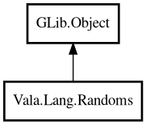

Randoms
Object Hierarchy:

Description:
public class Randoms : Object
Random utility methods.
This class offers common random operations for quick application logic: bounded integers, doubles, and in-place array shuffling.
Example:
int id = Randoms.nextInt (1000);
double ratio = Randoms.nextDouble ();
int[] values = { 1, 2, 3, 4 };
Randoms.shuffle<int> (values);
Content:
Static methods:
- public static double nextDouble ()
Returns a random double in [0.0, 1.0).
- public static int nextInt (int bound)
Returns a random integer in [0, bound).
- public static void shuffle<T> (T[] array)
Shuffles an array in place.
Creation methods:
Inherited Members:
All known members inherited from class GLib.Object
- @get
- @new
- @ref
- @set
- add_toggle_ref
- add_weak_pointer
- bind_property
- connect
- constructed
- disconnect
- dispose
- dup_data
- dup_qdata
- force_floating
- freeze_notify
- get_class
- get_data
- get_property
- get_qdata
- get_type
- getv
- interface_find_property
- interface_install_property
- interface_list_properties
- is_floating
- new_valist
- new_with_properties
- newv
- notify
- notify_property
- ref_count
- ref_sink
- remove_toggle_ref
- remove_weak_pointer
- replace_data
- replace_qdata
- set_data
- set_data_full
- set_property
- set_qdata
- set_qdata_full
- set_valist
- setv
- steal_data
- steal_qdata
- thaw_notify
- unref
- watch_closure
- weak_ref
- weak_unref